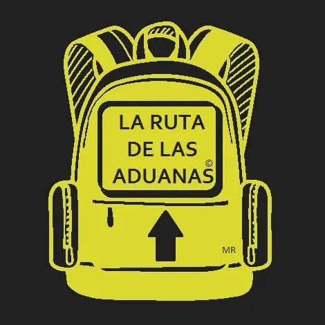

Servicios
Cursos
Contacto
¿Quiénes somos?
La Ruta de las Aduanas es una iniciativa educativa creada para apoyar a jóvenes interesados en el comercio exterior, brindando orientación clara, práctica y accesible sobre los procesos aduaneros y el funcionamiento del
comercio internacional.
Nace con el propósito de transformar la confusión en conocimiento, y las dudas en oportunidades de aprendizaje.
A través de cursos, talleres y masterclasses, buscamos acompañar a estudiantes en su formación académica, ofreciendo información actualizada,
explicada de manera sencilla y aplicada a situaciones reales. Nuestro enfoque es educativo, cercano y dinámico, promoviendo un aprendizaje que no solo informe, sino que también inspire.
MISIÓN
Facilitar el aprendizaje del comercio exterior mediante experiencias educativas claras,
prácticas y accesibles,
apoyando a jóvenes a comprender procesos aduaneros
y tomar decisiones informadas en su desarrollo académico y profesional.
VISIÓN
Ser una referencia educativa para estudiantes interesados en el comercio internacional, reconocida por transformar temas complejos en conocimientos
útiles, comprensibles y aplicables en el mundo real.
FILOSOFÍA
Creemos que el conocimiento debe ser claro, útil y compartido.
Apostamos por una educación cercana, actualizada y sin barreras,
donde aprender
no sea complicado, sino una ruta que motive, impulse y
abra puertas hacia nuevas oportunidades.
